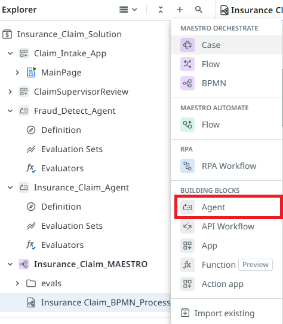
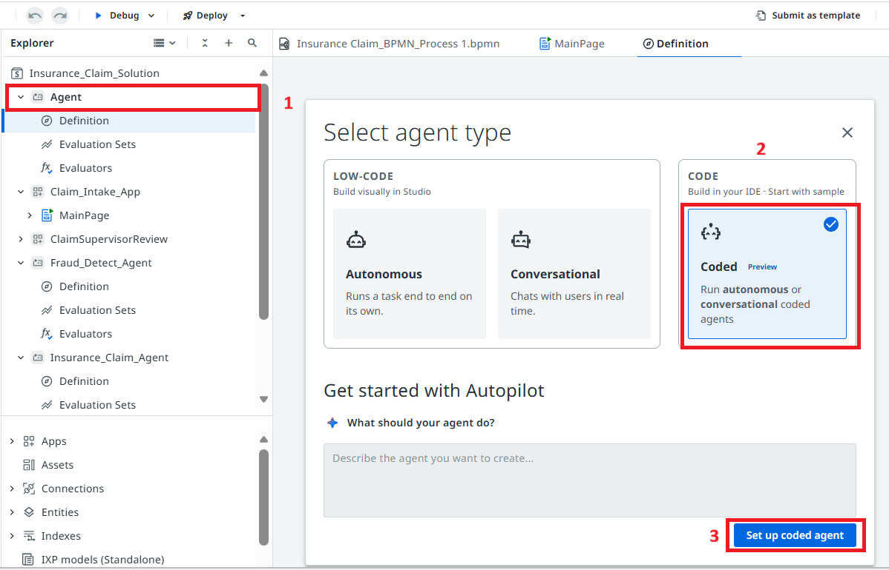
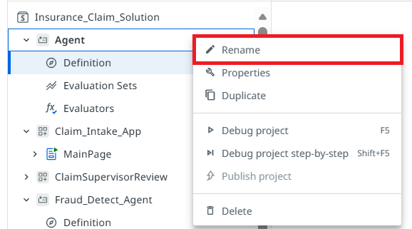
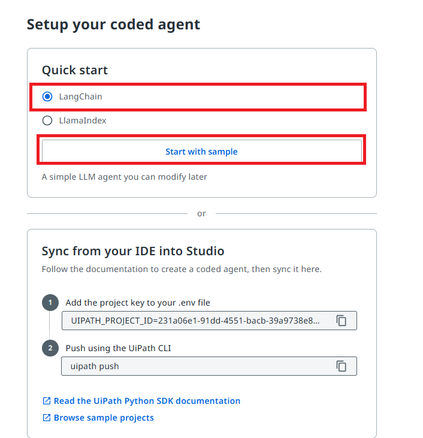
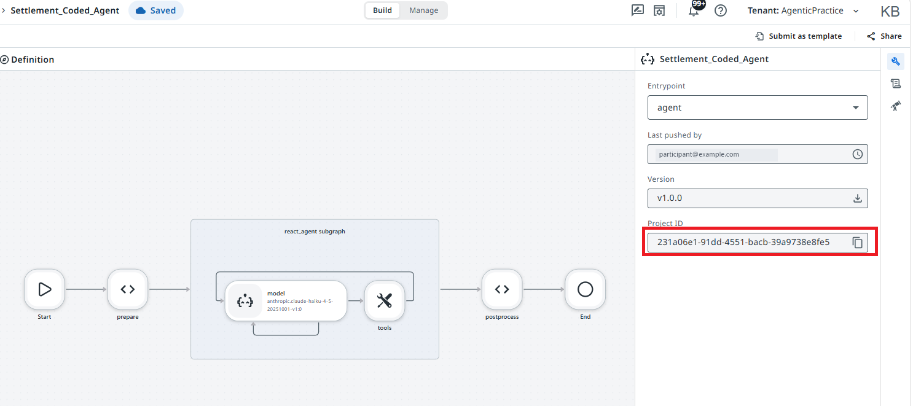

Create the Settlement Coded Agent
Next you add the Settlement Coded Agent to the same Insurance_Claim_Solution. It is a Python LangGraph agent that decides whether an approved claim can be settled and how much to pay.
What's a Coded Agent?
A Coded Agent is agent logic written in Python. You author its graph (nodes and edges) in code; the UiPath SDK and CLI handle packaging, publishing, governance and tracing, and the agent calls a UiPath-hosted model through the LLM Gateway.
LLM interprets
The model only normalizes the free-text incident type and coverage values (for example Vehicle Damage → Vehicle).
Python decides
Policy status, fraud verdict, eligibility, the 95% / 90% calculation, rounding and the fallback are deterministic Python rules.
Why a coded agent in this solution?
By the time a claim reaches settlement, the supervisor has approved it. What remains is a money decision: is the claim eligible, and how much do we pay? That calls for rules that are exact, repeatable and auditable — the same input must always give the same amount. A low-code agent decides with a prompt, which is flexible but not guaranteed to calculate the same way every time. A UiPath Coded Agent lets you write that logic in Python while keeping the agent fully inside the UiPath platform.
| UiPath Coded Agents give you | How this solution uses it |
|---|---|
| Code-first control — Python with LangGraph or LlamaIndex, unit-testable on your machine | Policy, fraud and coverage rules plus the 95% / 90% calculation are plain Python you test with uip codedagent run |
| Governed LLM access through the UiPath LLM Gateway and AI Trust Layer — no API keys in code | The agent calls Claude Haiku 4.5 only to normalize free text |
| Same lifecycle as other automations — part of the solution, versioned, deployed and traced in Orchestrator | Settlement_Coded_Agent lives in Insurance_Claim_Solution and is deployed with Maestro |
| Typed inputs and outputs generated from your code | Maestro maps five inputs and four outputs exactly like any other agent task |
Why this LLM?
The class uses anthropic.claude-haiku-4-5-20251001-v1:0. The model's only job here is small and well defined: turn values such as Vehicle Damage or full cover into one of a few allowed words and return a tiny JSON object. A fast, low-cost model is enough for that, keeps each settlement quick and cheap, and the important decisions never depend on it — if the model's answer cannot be read, the code falls back to manual review. Everyone uses the same model so results are comparable across the class.
How Studio Web and your terminal fit together
There are two parts to this exercise, but only one coded-agent project:
- Studio Web creates the cloud project inside
Insurance_Claim_Solutionand shows its unique project ID. - PowerShell or Command Prompt creates the local source files, including
main.py. The local folder is not another Studio Web project.
After you test the code locally, uip codedagent push uploads it to the same Studio Web project identified by UIPATH_PROJECT_ID.
| Command or action | Purpose |
|---|---|
uipath new | Creates the local Python agent scaffold. |
uip codedagent init | Generates the UiPath schemas and project metadata. |
uip codedagent run | Runs the local agent with a JSON input file. |
uip codedagent push | Pushes the local source to the existing Studio Web coded-agent project. |
| Studio Web Deploy | Publishes and deploys the complete solution, including Maestro and the coded agent. |
Add a coded agent to the solution
In the Explorer of Insurance_Claim_Solution click + and choose Agent under Building blocks.

A new Agent project appears (1). In Select agent type choose Coded under Code (2), then click Set up coded agent (3).

Insurance_Claim_Solution.Rename the project and start with the sample
Right-click the new Agent project, choose Rename and name it Settlement_Coded_Agent.

In Setup your coded agent keep LangChain selected and click Start with sample.

Settlement_Coded_Agent.Copy your project ID
Studio Web shows the sample graph. In the properties panel copy the Project ID (it is also shown as UIPATH_PROJECT_ID under Sync from your IDE into Studio). You will paste it into .env in the next lesson.

<PASTE_YOUR_STUDIO_WEB_PROJECT_ID_HERE>